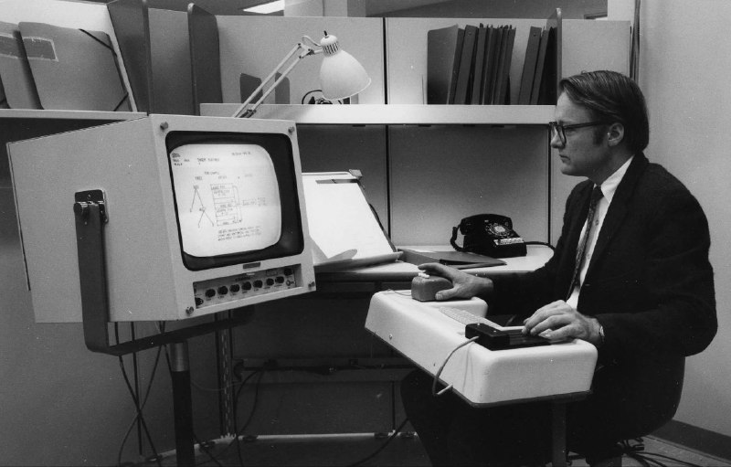

Как все начиналось

Информатика: начало
Термин "информатика" появился благодаря развитию вычислительной техники в середине XX в. Изначально под ней понималась наука об автоматизации вычислений. В 1956 году немецкий исследователь компьютеров Карл Штайнбух впервые употребил термин "информатика" в своей статье.

Информатика: сейчас
Информатика в XXI веке представляет собой огромную область знаний, занимающуюся обработкой информации с использованием компьютеров и технологий. Она охватывает широкий спектр тем, включая программирование, анализ данных, кибербезопасность, искусственный интеллект и многие другие аспекты информационных технологий, играя важную роль в развитии современного общества и экономики.